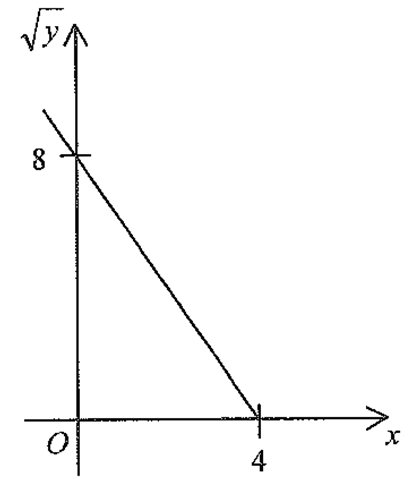

[2017MC#33]
The graph in the figure shows the linear relation between $x$ and $\sqrt{y}$. Which of the following must be true?

The straight line in the figure is the graph of $\sqrt{y}$ plotted against $x$ (a straight line,
not a parabola).
From the axes it passes through
$$(0,\;8)\qquad\text{and}\qquad(4,\;0).$$
So the $\sqrt{y}$-intercept is $8$ and the $x$-intercept is $4$.
Slope $m=\dfrac{0-8}{4-0}=\dfrac{-8}{4}=-2$.
Hint: the line falls from left to right,
so the slope must be negative — a good check.
Using point-slope form with $(4,0)$:
$$\sqrt{y}-0=\frac{8-0}{0-4}\,(x-4)$$
$$\sqrt{y}=-2x+8$$
$$y=\left(-2x+8\right)^2$$
$$y=(-2)^2x^2+2(-2x)(8)+8^2$$
$$y=4x^2-32x+64$$
Remember: $y\ge 0$ automatically,
since $y=(\sqrt{y})^2$ — consistent with a graph drawn only for $\sqrt{y}\ge 0$.
Question. The figure shows the graph of \(\sqrt{y}\) plotted against \(x\), which is a straight line passing through \((0,\,6)\) and \((3,\,0)\). Express \(y\) in terms of \(x\).